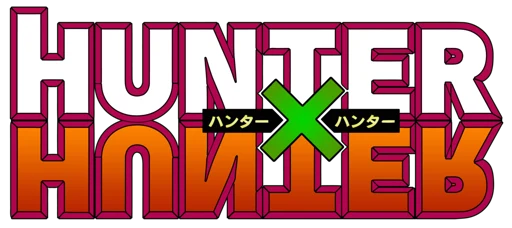
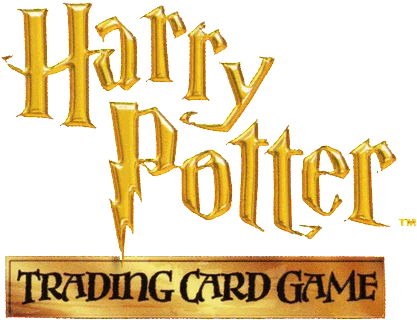
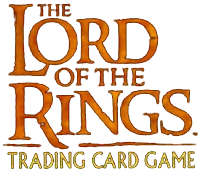
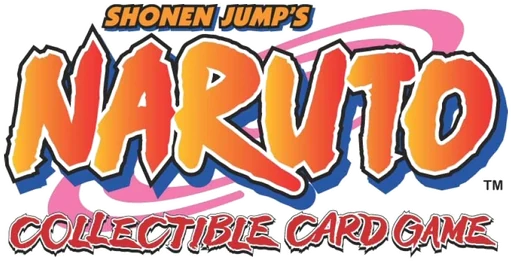
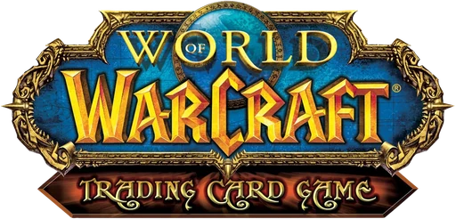

Vintage
Jogos de cartas que saíram de linha, na ordem em que a história aconteceu. Escolha uma marca pra ver a história dela em cartas.
- Gundam Carddass 1988–1997
- Dragon Ball Carddass 1988–1997
- Carddass Masters 1996–2011
- Gundam War 1999–2011
- One Piece Carddass Hyper Battle 1999–2002
-

Hunter × Hunter Carddass Hyper Battle 1999–2001 - Dragon Ball Z CCG 2000–2006
-

Harry Potter Trading Card Game 2001–2002 -

The Lord of the Rings TCG 2001–2007 - One Piece Card Game (2002) 2002–2005
- Naruto Card Game (2002~2006) 2002~2006
- Naruto Data Carddass 2005–2010
-

Naruto Collectible Card Game 2006–2013 -

World of Warcraft TCG 2006–2013 - Naruto Shippuden Card Game 2007–2008
- Miracle Battle Carddass 2009–2014
Nenhum jogo vintage dessa marca ainda.
Mais jogos vintage a caminho.